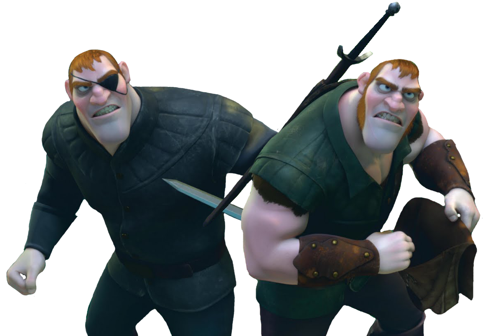

O filme gira em torno de Rapunzel, uma jovem princesa que foi sequestrada quando bebê por uma bruxa, Gothel, com o objetivo de usar seus cabelos mágicos para manter a juventude. Trancada em uma torre durante 18 anos, Rapunzel anseia por explorar o mundo além das “luzes flutuantes”.
Uma jovem com longos cabelos mágicos que sonha em explorar o mundo. Criada por Mother Gothel em uma torre, ela busca sua verdadeira identidade e liberdade.
Um ladrão charmoso que se encontra com Rapunzel. Inicialmente egoísta, ele se apaixona por ela e se torna seu aliado na busca pela liberdade.
A antagonista que sequestrou Rapunzel para usar seus cabelos mágicos e manter sua juventude. Manipuladora, ela faz Rapunzel acreditar que a ama enquanto a mantém presa.
Dois ladrões que são antigos aliados de Flynn, mas se tornam antagonistas após serem traídos por ele. Eles buscam vingança.
Maximus é um cavalo da guarda do reino com uma personalidade cômica e determinada. No início, ele está obcecado em capturar Flynn Rider, mas, ao longo do filme, se torna aliado de Rapunzel e Flynn, ajudando-os em várias aventuras.
Ele é o fiel amigo e companheiro da Rapunzel.
O filme é inspirado no conto de fadas "Rapunzel", dos irmãos Grimm, e foi lançado em 2010, sendo a 50ª animação da Disney.